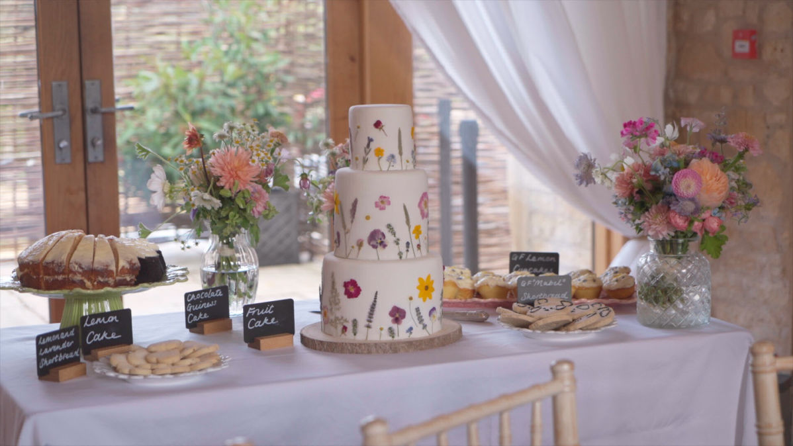
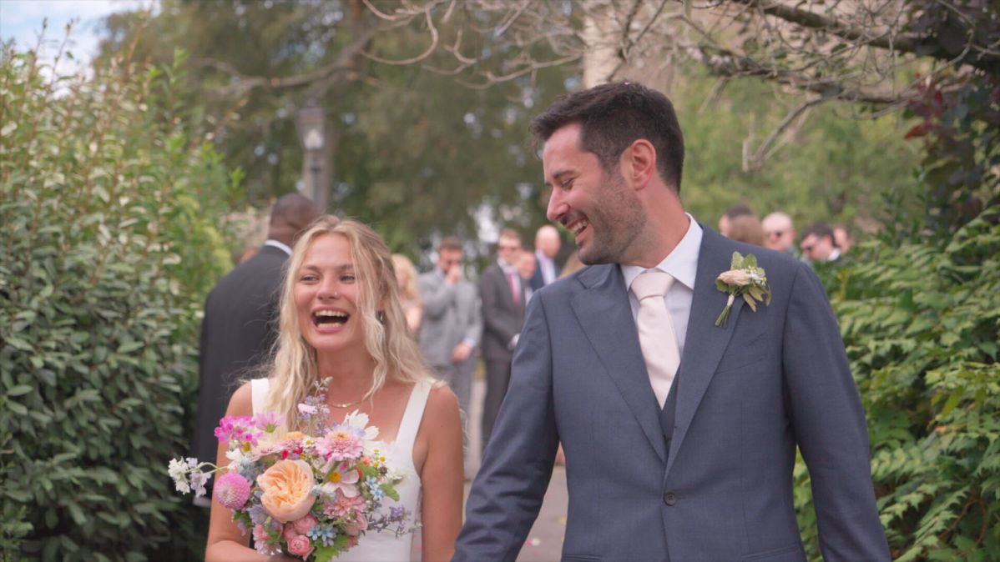
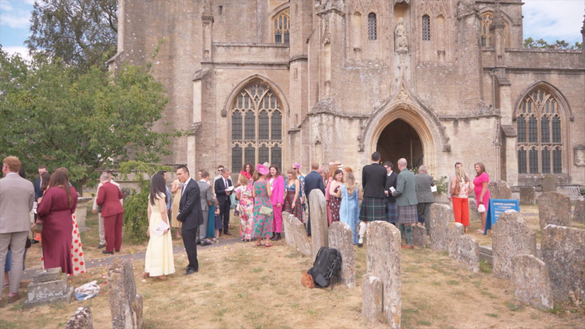
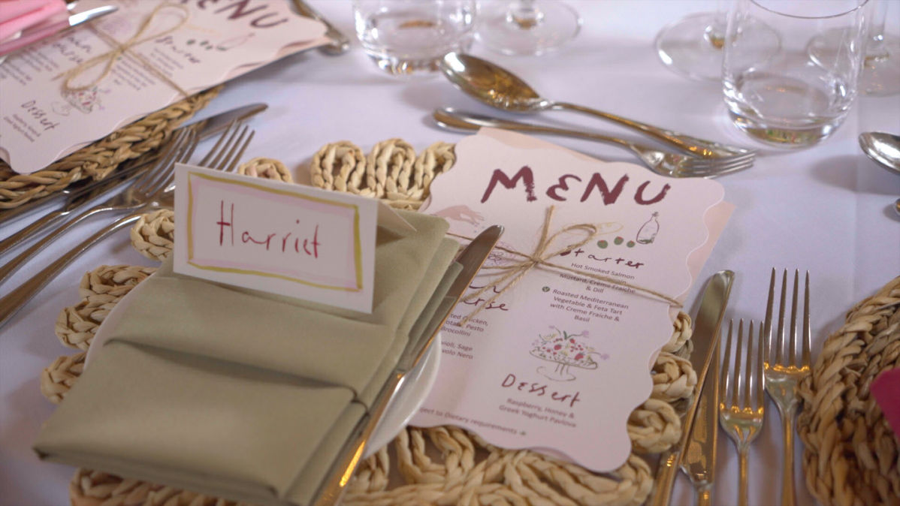

Your wedding will go by faster than you ever imagined! While you're soaking up all the hugs, laughs and happy tears, we'll quietly capture the moments you missed, the emotions and the voices you'll never want to forget. We're Katy and Eugene, a videography team creating natural wedding films across Portugal for couples who want to be fully present, not performing for the camera.
Start Your Wedding Film (Service Page)
The day you've spent months planning will feel like a blur.
Everyone says the same thing after their wedding:
"It went by so quickly."
One moment you're getting ready.
The next you're on the dance floor wondering where the day went.
There will be hugs you never saw.
Tears you didn't notice.
Friends laughing together while you were across the room.
Moments you'll wish you could experience again.
That's why we make wedding videos.
Not just to create beautiful films.
But to help you relive one of the happiest days of your life.


Why having a Portugal wedding videographer makes a difference
Photographs capture what your wedding looked like.
Film lets you experience it again.
Hear your vows.
Listen to the speeches.
See your parents' reactions.
Watch your grandparents laughing.
Remember how it all felt.
Years from now, those voices may become the most precious memories of all.

Your Portugal Wedding Videographer Team
Hi, we're Katy & Eugene!
We're a videographer team based in Portugal.
We believe the best wedding films happen when couples forget the cameras are even there.
You'll never spend your day recreating moments or acting for social media.
Instead, we quietly document your wedding as it naturally unfolds, allowing you to stay present with the people who matter most.
Meet Katy & Eugene (About Page)
Wedding Films
Whether you're planning a celebration overlooking the Algarve, exchanging vows in a historic Portuguese villa, or celebrating with family beneath the vineyards of the Douro Valley, every wedding deserves to be remembered honestly.
Our films are relaxed, story-driven and full of genuine moments.
Just your day, beautifully told.


Portugal Wedding Videographer FAQs
Do you pose us?
No. We gently guide when needed, but most of your wedding is simply documented as it naturally happens.
Do you travel across Portugal?
Yes!
How long are your films?
You can find more details on our packages page (link packages here)


One day
If you're looking for a Portugal wedding videographer who'll help you stay present while capturing all the laughs, vows and special moments, we'd love to tell your story.
Enquire About Your Wedding (Contact)